The Pythagorean Theorem — Practice Set
Bank code: GEO-PYT · Section: Geometry · 30 questions — Easy 7 · Medium 17 · Hard 6
Know 3-4-5, 5-12-13, 8-15-17 and 7-24-25 on sight; the theorem runs backwards to find a leg, and it reaches into three dimensions for a space diagonal.
Every question below is live in the question bank under the ID shown — the sheet and the portal are the same questions. Attempt a level with the clock running, then check Part C.
Part A — Questions
Quantitative Comparison — the four choices are always the same, so they are not reprinted: (A) Quantity A is greater · (B) Quantity B is greater · (C) The two quantities are equal · (D) The relationship cannot be determined from the information given
Level 1 · Easy — 7 questions · ~7 min
warm-up — these must be automatic
Q1 · GEO-PYT-001 · MCQ · 40s
A right triangle has legs of length 3 and 4. What is the length of the hypotenuse?
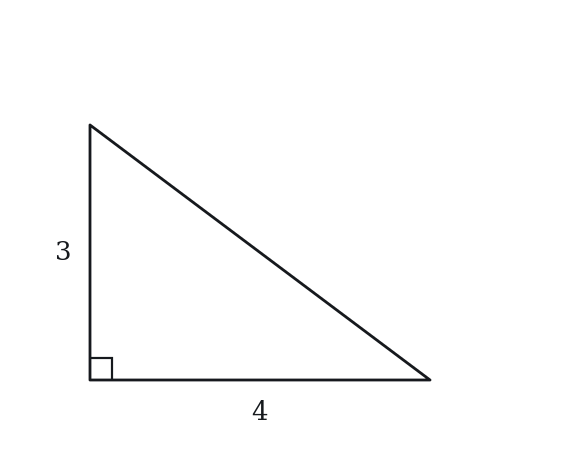
(A) 5
(B) 6
(C) 7
(D) 12
(E) 25
Q2 · GEO-PYT-004 · MCQ · 45s
What is the length of the diagonal of a rectangle with length 5 and width 12?
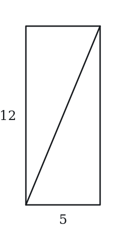
(A) 11
(B) 13
(C) 15
(D) 17
(E) 60
Q3 · GEO-PYT-005 · QC · 45s
A right triangle has legs a = 9 and b = 12.
Quantity A: The hypotenuse of the triangle Quantity B: 15
Q4 · GEO-PYT-006 · MCQ · 55s
Which of the following sets of three numbers can be the side lengths of a right triangle?
(A) 2, 3, 4
(B) 3, 4, 6
(C) 5, 12, 13
(D) 6, 7, 8
(E) 4, 5, 7
Q5 · GEO-PYT-008 · MCQ · 45s
A right triangle has a hypotenuse of 10 and one leg of 8. What is the length of the other leg?
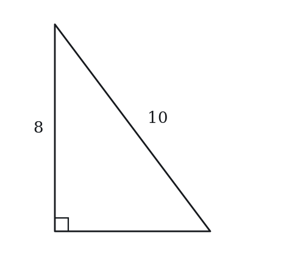
(A) 2
(B) 4
(C) 6
(D) 9
(E) 18
Q6 · GEO-PYT-035 · MCQ · 80s
The side lengths of a right triangle are consecutive integers. What are the three side lengths?
(A) 1, 2, 3
(B) 2, 3, 4
(C) 3, 4, 5
(D) 4, 5, 6
(E) 5, 6, 7
Q7 · GEO-PYT-044 · Numeric Entry · 85s
Right triangle ABC has legs AB = 3 and BC = 4 with the right angle at B. A square is constructed on the outside of the triangle with the hypotenuse AC as one of its sides. What is the area of that square?
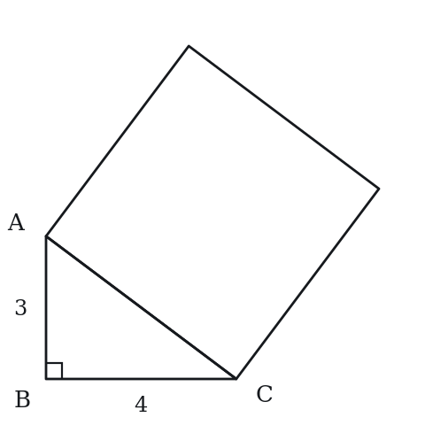
Numeric entry — write the number.
Level 2 · Medium — 17 questions · ~25 min
two or three steps, one planted trap each
Q8 · GEO-PYT-016 · MCQ · 70s
A rectangle has a diagonal of length 20 and a width of 12. What is the area of the rectangle?
(A) 96
(B) 128
(C) 192
(D) 240
(E) 256
Q9 · GEO-PYT-017 · QC · 65s
A right triangle has a hypotenuse of 25 and one leg of 7.
Quantity A: The length of the other leg Quantity B: 24
Q10 · GEO-PYT-020 · Numeric Entry · 75s
A ladder 15 feet long leans against a vertical wall. The base of the ladder is 9 feet from the wall. How high up the wall does the ladder reach, in feet?
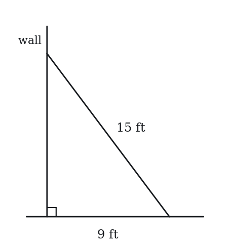
Numeric entry — write the number.
Q11 · GEO-PYT-021 · MCQ · 75s
The area of a right triangle is 30 square units. One leg has length 5. What is the length of the hypotenuse?
(A) 8
(B) 10
(C) 11
(D) 13
(E) 25
Q12 · GEO-PYT-024 · Numeric Entry · 90s
A right triangle has a perimeter of 30 and a hypotenuse of 13. What is the area of the triangle?
Numeric entry — write the number.
Q13 · GEO-PYT-026 · Select all that apply · 90s
Right triangle XYZ has integer side lengths and a hypotenuse of length 65. Which of the following could be the length of one of its legs? Select all that apply.
(A) 16
(B) 33
(C) 40
(D) 50
(E) 60
Q14 · GEO-PYT-027 · QC · 75s
In a right triangle, one leg has length 5.
Quantity A: The hypotenuse of the right triangle when the other leg = 12 Quantity B: The hypotenuse of the right triangle when the other leg = 13
Q15 · GEO-PYT-028 · MCQ · 80s
A right triangle has legs in the ratio 3:4. If the hypotenuse is 20, what is the length of the shorter leg?
(A) 8
(B) 10
(C) 12
(D) 15
(E) 16
Q16 · GEO-PYT-030 · Select all that apply · 85s
For a triangle with sides a, b, and c where c is the longest side, which of the following conditions guarantee that the triangle is NOT a right triangle? Select all that apply.
(A) a² + b² > c²
(B) a² + b² < c²
(C) a² + b² = c²
(D) c² − a² = b² + 1
(E) a + b > c only (with no information about squares)
Q17 · GEO-PYT-041 · MCQ · 100s
In right triangle ABC with right angle at C, the altitude from C meets AB at point D. If AD = 4 and DB = 9, what is the length of CD?

(A) √13
(B) 5
(C) 6
(D) 6.5
(E) 7
Q18 · GEO-PYT-042 · QC · 95s
A rectangular box has length 6, width 6, and variable height h.
Quantity A: Space diagonal when h = 7 Quantity B: Space diagonal when h = 8
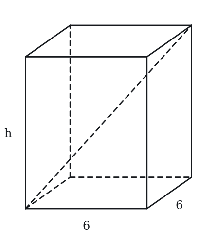
Q19 · GEO-PYT-051 · Select all that apply · 100s
For a right triangle with legs a, b and hypotenuse c, which of the following statements are always true? Select all that apply.
(A) a + b > c
(B) a + b = c
(C) c > a and c > b
(D) a² + b² = c²
(E) c² > a² + b²
Q20 · GEO-PYT-053 · Numeric Entry · 105s
A rectangular box has a square base with side length 6 and a height of 2. What is the length of the space diagonal (connecting opposite corners through the interior), rounded to the nearest integer?
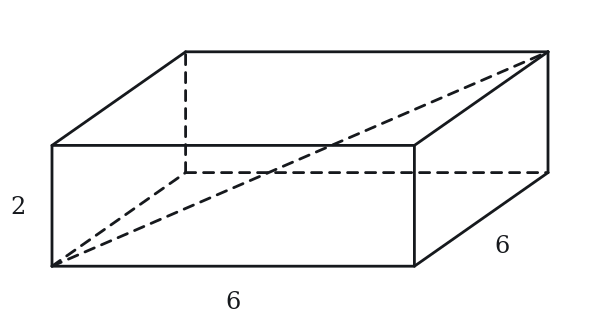
Numeric entry — write the number.
Q21 · GEO-PYT-056 · QC · 125s
Let T be a right triangle with legs a and b and hypotenuse c. Define the ratio R = (a² + b² + c²) / (ab).
Quantity A: R for the (3, 4, 5) right triangle Quantity B: R for the (5, 12, 13) right triangle
Q22 · GEO-PYT-KMF-001 · MCQ · 85s
A triangular sail has sides whose lengths are in the ratio 8 to 15 to 17. The sail encloses an area of 240 square feet. What is the perimeter of the sail, in feet?
(A) 40
(B) 60
(C) 80
(D) 120
(E) 160
Q23 · GEO-PYT-KMF-005 · QC · 90s
A 17-foot ladder rests against a vertical wall with its top exactly 15 feet above the level ground. The top then slips 3 feet straight down the wall, and the foot of the ladder slides along the ground directly away from the wall.
Quantity A: The distance the foot of the ladder slides along the ground Quantity B: 3 feet
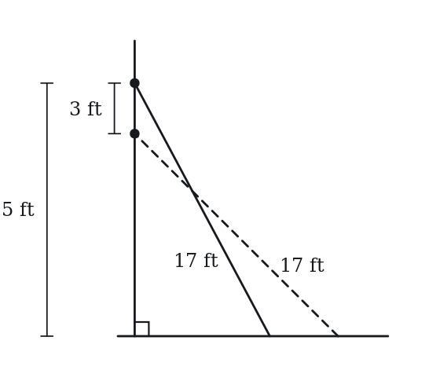
Q24 · SEC-PG-008 · Numeric Entry · 85s
All angles in the figure above are right angles, and the lengths of the six segments are as marked. What is the straight-line distance from point P to point Q?
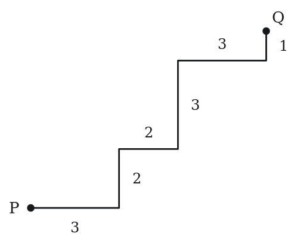
Numeric entry — write the number.
Level 3 · Hard — 6 questions · ~11 min
where 162+ is won or lost
Q25 · GEO-PYT-045 · Select all that apply · 105s
Right triangle PQR has legs PQ = 9 and QR = 12, with right angle at Q. Point S lies on PR such that QS is perpendicular to PR. Which of the following statements are true? Select all that apply.
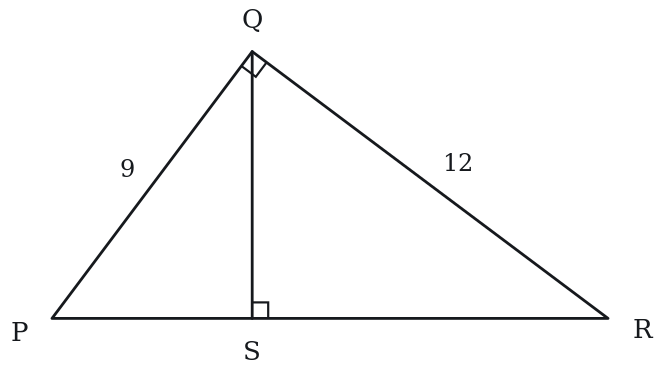
(A) PR = 15
(B) QS = 7.5
(C) PS = 27/5
(D) The area of triangle PQS is 27
(E) The area of triangle PQR is 54
Q26 · GEO-PYT-048 · MCQ · 105s
A right triangle has an area of 84 and a hypotenuse of 25. What is the perimeter of the triangle?
(A) 50
(B) 56
(C) 60
(D) 63
(E) 70
Q27 · GEO-PYT-049 · Numeric Entry · 105s
A right triangle has legs a and b with a > b. If a − b = 7 and the hypotenuse is 13, what is the value of a + b?
Numeric entry — write the number.
Q28 · GEO-PYT-KMF-004 · QC · 110s
A right triangle has legs of length p and q, both greater than 1, and hypotenuse h. A second right triangle is formed by shortening every leg of the first one by 1 unit.
Quantity A: The longest side of the second triangle Quantity B: h - 1
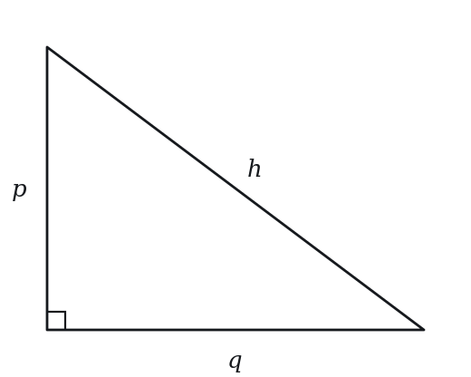
Q29 · SEC-PG-012 · Select all that apply · 125s
A rectangular photograph has a diagonal 25 centimeters long. One side of the photograph is longer than 7 centimeters and shorter than 15 centimeters. Which of the following could be the area, in square centimeters, of the photograph?
Indicate all such values.
(A) 150
(B) 180
(C) 240
(D) 294
(E) 300
F. 320
Q30 · SEC-PG-027 · MCQ · 115s
The advertised size of a television is the length of the diagonal of its rectangular viewing screen. For a television advertised as 55-inch, if the lengths of the sides of the viewing screen are in the ratio 16 to 9, which of the following is closest to the area, in square inches, of the viewing screen?
(A) 697
(B) 1,100
(C) 1,293
(D) 1,485
(E) 3,025
The rest of this sheet is part of Pro
All 30 questions, the answer key and full worked solutions with every trap named — plus 75 concept notes and 9,629 questions.